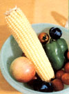

Spring has arrived, resplendent in all of its verdant fullness, and the seasonal cornucopia of flower and fragrance overflows. Fat, proud peonies perfume the lambent air, the year's first fresh-picked peas delight the palate, and-as soft night surrenders to day in the battle of the hourswinter's desolate chill is forgotten in the joy of life renewed.
With the apple trees already past blossoming in many parts of North America, it's time to think ahead to that most refreshing of beverages: cider. And Lew Nichols and E.A. Proulx (the authors of "Tame Wild Apples and Berries" in MOTHER NO. 68, page 110) have just published an exhaustive study of the subject: Sweet and Hard Cider: Making It, Using It, and Enjoying It (available for $9.95-plus $1.00 shipping and handling-from Garden Way, Dept. TMEN, 528 Ferry Road, Charlotte, Vermont 05445). The book covers ev erything from home orchard care to the making of six dif ferent ciders .
There's still time (again, in most parts of the country) to tuck some popcorn seeds in an unused corner of the garden . . . and MOTHER has found a merchant who's offering ten different kinds of the explosive kernels! The Crockett Seed Company-which has purchased a mail order seed business formerly owned by that old-time supplier of organic necessities, the Natural Development Company-has varieties ranging from the relatively early Strawberry corn (90 days) and White Hulless type (95 days) to the long-season Tiny Tender Black (120 days). Send $1.00 (postpaid) for each packet (the firm's catalog is free) to Crockett Send Company, Dept. TMEN, P.O. Box 237, Metamora, Ohio 43540 . . . and get the popper ready!
Though instantaneous decomposition may be a bit down the road yet, we've come across some news (reported by R.M. Carleton in the journal of the American Horticultural Society, Dept. TMEN, Mount Vernon, Virginia 22121 . . . membership $20) that's pretty exciting. It seems that a new composting system has-in teststransformed shredded matter comprising weeds, citrus peels, tomatoes, mangoes, melons, a slightly decayed whole chicken, several corrugated cartons, and (!) a pair of woolen trousers into garden-ready compost with the consistency of ground. up, moist tobacco in only eight days! The technique, which was invented by a Canadian, Jack Warrington, employs a "bin" made of felted plastic material that provides excellent control of heat, moisture, and air. The required containers, and a special shredding blade for use on rotary mowers, will be marketed some time this year . . . and MOTHER will do her darnedest to rush test results to you.
In many parts of the country, last autumn was so dry that, by December, the word "drought" began to be heard. And in January-which had the least rainfall ever recorded during that month in the Northeast-big cities' water supplies had dropped perilously close to the crisis level. Worse still, many meteorologists began predicting that the next two decades-right to the end of the centurywould be marked by much less rainfall than normal. For the thousands of gardeners who have been able to rely-without much thought- on nature for ample supplies of moisture, there was a whole new set of problems to face.
Well, with the spring some rainfall came . . . and the water levels in many reservoirs rose. But wise gardeners are aware that the promise of spring sometimes withers in summer's heat ... and that precautions against the possibility of a longlasting dry spell should be taken. MOTHER has come up with a fivepoint program that should help your garden make it through all but the worst of droughts.
The first step-although it may be too late for you to take action on it this season-is to increase the water-holding capability (known as field capacity) of your garden itself ... by incorporating all of the organic matter that you can into the soil.
The second step is to preserve vital moisture by making extensive use of mulch. You'll find a number of good suggestions on mulching in Stu Campbell's The Mulch Book (Garden Way, 1973) . . . which is available at bookstores or-for $3.95 plus 952 shipping and handling-from Mother's Bookshelf, P.O. Box 70, Hendersonville, North Carolina 28791.
The third step is to make maximum use of the water that does fall. Set rain barrels under your downspouts to harvest the runoff from your roof. Buy a small pump attachment for your 1/4" drill and reclaim the rinse cycle's "gray water" from your washing machine. Certain precautions must be observed when you employ gray water, and there's an excellent discussion of the subject in the Farallones Institute's book The Integral Urban House (Sierra Club Books, 1979, $12.95 at bookstores . . . or from Mother's Bookshelf for the list price plus 95 cents shipping and handling).
The fourth step involves insuring that whatever moisture you have available gets to your garden in as efficient a manner as possible. Oscillating sprinklers may be fine in ordinary times, but such devices cause an enormous amount of water to be lost to evaporation. Since your vegetable garden needs an inch of water a week in the summer, you'll conserve the precious liquid best by putting it where it will do the most good: right above the roots. If you hand-water, try using a soaker hose. The Super Soaker sold by Domestic Growers Supply (Dept. TMEN, P.O. Box 809, Cave Junction, Oregon 97523, catalog $1.00 refundable) is made of materials recycled from old tires, and it's a good one.
After you've done everything possible to bring what water there is to soil that's well prepared to receive and retain it, there's a fifth step: Plant drought-resistant varieties. Cleopatra broccoli, for example, tolerates dry weather better than any other type ... while lochief Hybrid corn is known for its performance under parched conditions.
|
|
 |
|